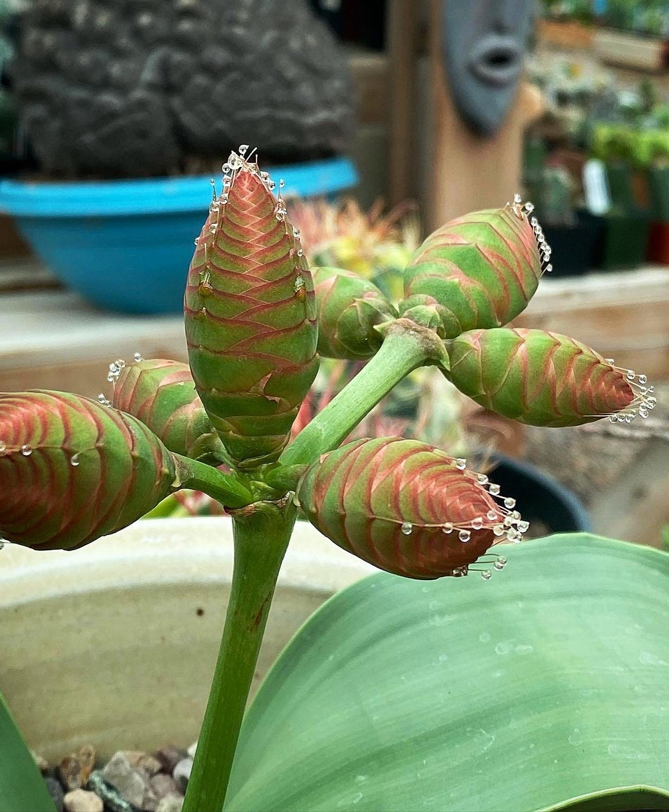

Maastricht is een stad en gemeente in het zuiden van Nederland. Het is de hoofdstad van de provincie Limburg en telt 118.636 inwoners. Het is hiermee de grootste gemeente van de provincie Limburg. Maastricht is ontstaan bij een doorwaadbare plaats aan de rivier de Maas, waaraan het zijn naam te danken heeft. Bron: Wikipedia
Antwerpen is een stad in het Belgische gewest Vlaanderen. Het is de hoofdstad van de provincie Antwerpen en van het gelijknamige arrondissement. Antwerpen telt circa 529.000 inwoners en is daarmee qua inwonertal de grootste gemeente van België. Bron: Wikipedia
Luxemburg is de hoofdstad en grootste stad van het Groothertogdom Luxemburg. Het ligt in het kanton Luxemburg. De rivieren Alzette en Pétrusse stromen door de stad. De naam Luxemburg is afkomstig van Lucilinburhuc, dat kleine burcht betekent. De stad is een van de rijkste steden van Europa. Bron: Wikipedia
De plant komt voor in de kuststreken van Angola en Namibië, en is vernoemd naar de Oostenrijkse arts en botanicus Friedrich Welwitsch. De plant heeft in aanleg drie paar kruiswijs staande bladeren, waarvan slechts twee zeer langzaam groeiende bladeren blijvend zijn. Het eerste paar zijn de kiembladen, het tweede paar zijn de blijvende bladen. De bladeren zitten aan de korte stam. Ze groeien met een basaal meristeem permanent verder gedurende het leven van de plant. De plant is tweehuizig (dat wil zeggen dat er aparte mannelijke en vrouwelijke planten zijn) en is voor haar bestuiving aangewezen op een rode wants, de welwitschiawants (Probergrothius sexpunctatis). Gemiddeld worden de planten zo'n 500 tot 600 jaar oud, maar van sommige exemplaren is bekend dat ze wel 2000 jaar oud zijn. Bron: Wikipedia
Wist u dat
In het gebied waar de plant groeit regent het maar weinig. De jaarlijkse regenval van ongeveer 1–100 mm is ontoereikend voor de plant. Ook condensatie van mist, wat leidt tot een neerslagequivalent van 50 mm, is ontoereikend. De plant haalt haar water vooral uit ondergrondse waterbronnen en -stromen. Vanwege haar langzame groei en doordat veel oudere planten zijn weggehaald door verzamelaars, is de plant uit sommige gebieden bijna verdwenen. De Welwitschia lijkt in Angola beter beschermd te zijn dan in Namibië, omdat in Angola verzamelaars op een afstand worden gehouden door landmijnen.
Welwitschia-Mirabilis

Gekweekte exemplaren
In de Hortus Botanicus Amsterdam staan twee exemplaren van de Welwitschia in de woestijnkas in het centrum van de tuin. Ook de Belgische Nationale Plantentuin in Meise bezit een vitrine met een Welwitschia. Een exemplaar is ook te vinden in de Palmengarten te Frankfurt. Ook in de botanische tuin in Kopenhagen is de plant te vinden.